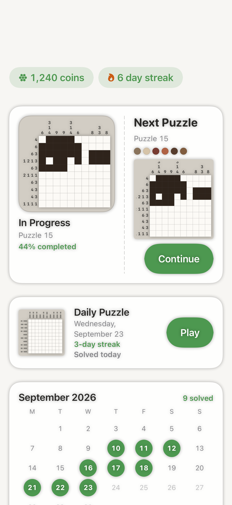
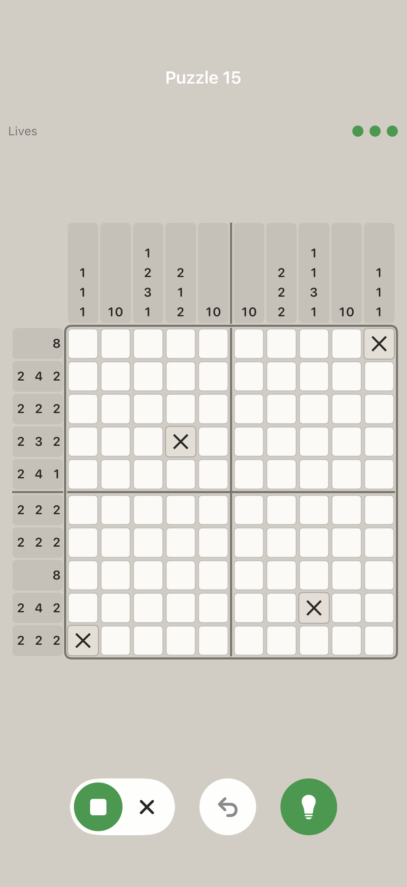
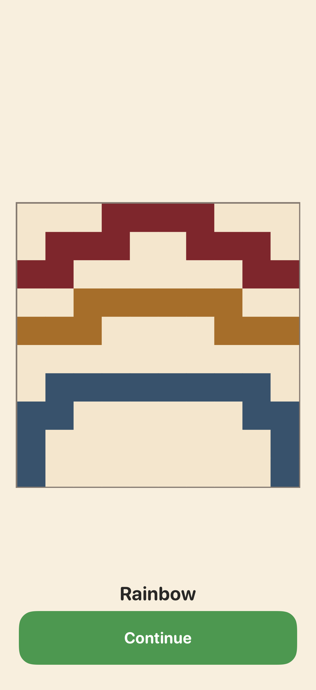
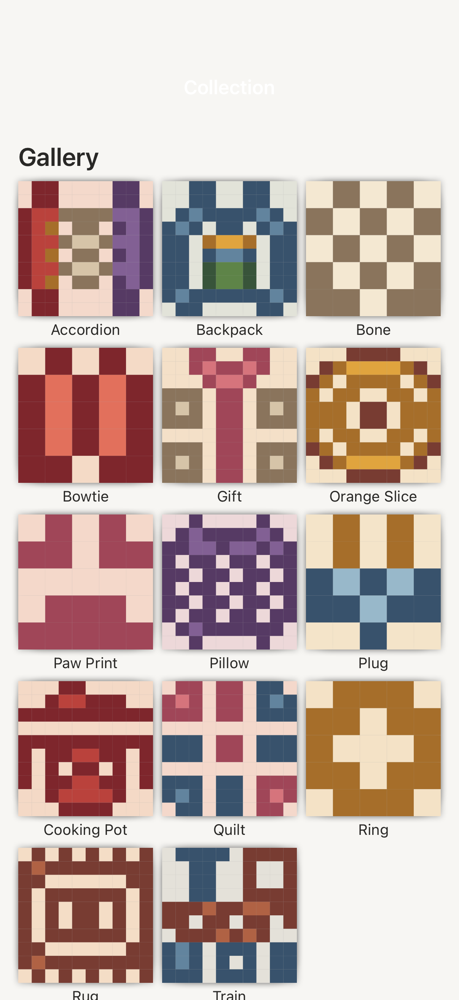
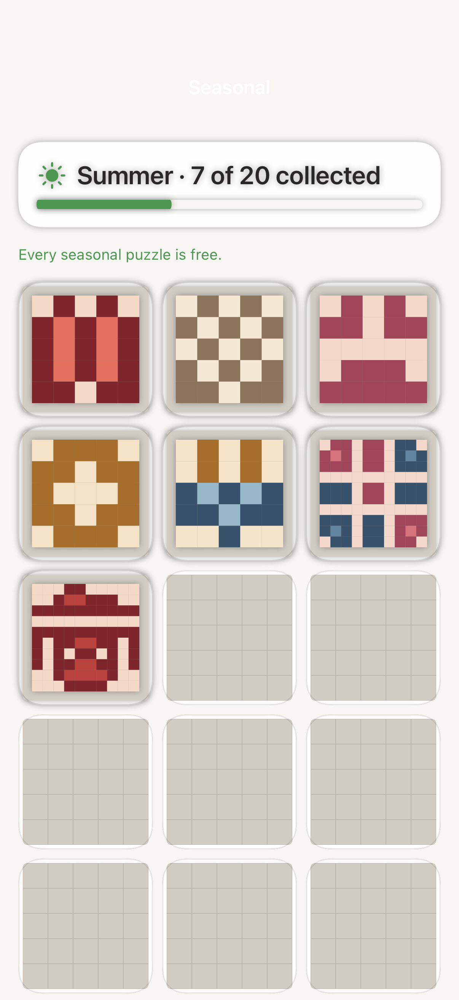
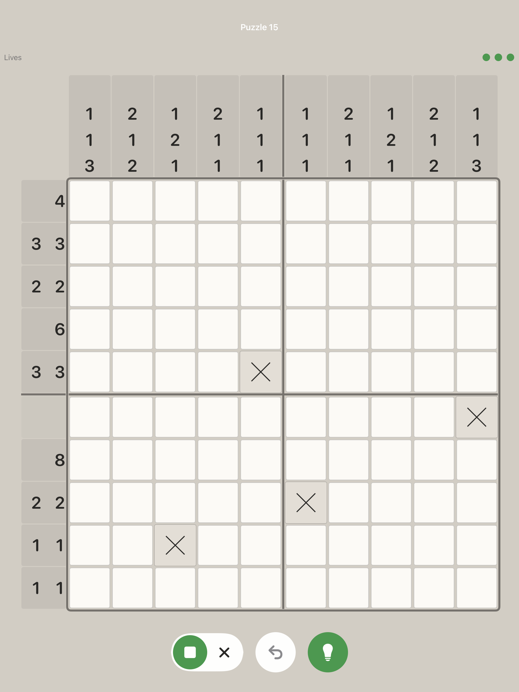

The clues are numbers.
The answer is a picture.
Every puzzle is a grid of empty squares and a margin full of numbers. Work out which squares are filled, and a small pixel picture comes out the other side.
No energy meter. No waiting. Every puzzle is open from the moment you install — and if an attempt goes wrong, starting it again is instant and costs nothing.
Tap once to fill, again to rule out.
That's a tree.
Three numbers, one picture
A clue like 2 1 means that line holds a run of two filled squares, then at least one gap, then a single one. Nothing is guessed — every puzzle in the game can be solved by reasoning alone.
Start with the certainties
A row of six in a six-wide grid can only be filled one way. Those free squares are the foothold for everything else.
Cross out what cannot be
Ruling a square out is as useful as filling one in. Undo is free and unlimited, so there is no cost to changing your mind.
The picture colours itself in
The last square you place is the one that turns a grid of marks into something you recognise. Then it is yours, and it goes on the shelf.
It remembers where you stopped
The home screen opens on whatever you were in the middle of — here, a puzzle 44 % done — with the next one queued beside it and today's daily puzzle underneath. The calendar below keeps a quiet record of the days you showed up.
Coins and a day streak sit at the top. Coins buy hints, a second chance and cosmetics. They never buy access to a puzzle.

Ten by ten, and room to think
Clue strips run along the top and the left, the board is divided into blocks of five so you can count without losing your place, and three controls sit under your thumb: fill or rule out, undo, hint.
The three dots are the attempt's lives. Three mistakes end that attempt — not the puzzle, which stays open, and which you can start again straight away for nothing.

Every solve has a name
Finish the grid and the squares drop their outlines and turn into the picture they were describing the whole time. This one is called Rainbow. There are one hundred and ninety-five of them.

A shelf that fills up
Solved pictures go into a gallery — an accordion, a backpack, a bone, a bowtie, a gift, an orange slice, a paw print, a pillow, a plug, a cooking pot, a quilt, a ring, a rug, a train. Seeing the gaps is most of the reason to come back.

Seasonal sets, free
Each season brings its own set of twenty pictures with empty frames waiting where the unsolved ones go. The app says it plainly on the screen: every seasonal puzzle is free.

On iPad it is a bigger board, not a bigger phone
The iPad layout is drawn for the iPad: the grid takes the width it is given, the clue strips grow with it, and the controls stay where your hand is. Your progress follows you between the two through your own iCloud account.

The plain facts
Questions
I have never played one of these. Is it hard?
The first few puzzles are five squares across and teach you the one rule you need. It is logic, not arithmetic — the numbers describe runs of filled squares, and you never have to add anything up.
What happens when I get one wrong?
An attempt carries three lives. Three wrong squares end that attempt and clear the board. The puzzle itself stays open, and starting it again is immediate and costs nothing. Undo is free and there is no limit on it.
Is there an energy bar or a timer between puzzles?
No. There is nothing to wait for and nothing to refill. Every puzzle in the app is unlocked from the first launch.
Does it show ads?
Yes. There is a banner, and an ad at some points between puzzles. A few optional extras — a hint, a second chance at an attempt — can be taken by watching a short video instead of spending coins, if you would rather. None of it is required to keep playing.
What can I buy, and do I have to?
Optional one-off items only: coins, and a few conveniences and cosmetics. There is no subscription. Coins are never needed to open a puzzle, and the pictures that unlock new areas cannot be bought at any price — they are earned by solving. Current prices are displayed in the App and on the App Store, and may vary by region.
Will my progress move to my other device?
Yes, through your own iCloud account, as long as you are signed in to the same Apple Account on both. Your saves are also kept on the device itself, so the game works when you are offline.
Who made it?
A very small independent studio. If something is broken or you have an idea, the support address below reaches a person.